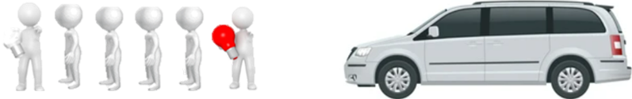

Team Responsibilities
• One SHORT whistle blast signals an incoming car
• One LONG whistle blast signals
danger; leave the road immediately
• Take care not to confuse motorists and be conscious of your torch
beam
• Front and rear team members should be aware of safety for the entire team
• Ensure that the
team is spaced tight enough that there is NOT enough room for motorists to pull in between you
• Change the
team at regular intervals in safe locations
• Report any safety concerns immediately
Team Setup
This would be a standard team setup for a group of five; this would ideally never be smaller
than a group of four in this context
Front - Lookout and using red or white light
Second -
Searcher
Third - Searcher
Fourth - Searcher
Rear - Lookout and using red or white
light
Team members should never divert from their specific tasking
Lighting Setup
• Remember the change to red and white light positions depending on the carriageway and your
direction of search
• Emulate how a vehicle would be travelling in the same direction on that
carriageway
• If going with the flow of traffic, the red light should be at the rear and the white light
should be at the front
• If going against the flow of traffic, the red light should be at the front and the
white light should be at the rear
Horizontal Lighting Setup

Vertical Lighting Setup